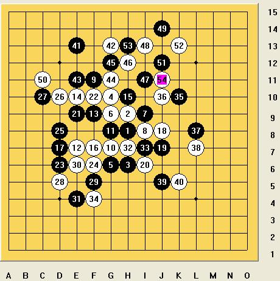
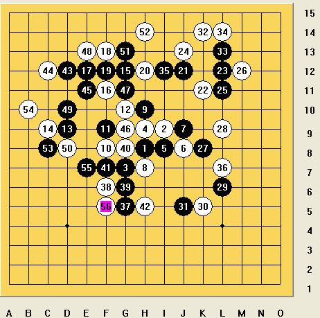

冰魔棋评汇总
#1 冰魔棋评汇总 作者：梧桐风 发表时间：2013-7-5 22:22:04
冰魔2009全团赛
每当比赛完,总有大师谈感想，评棋局。虽然我混迹五子已多年，却是脑袋空空两眼迷茫，依然徘徊于小虾米之间，有什么不同的话就是老点罢了。老虾米也稍微回顾下这次全团赛吧。
虽然以前参加过一次全国赛，但那时候还幼稚并且只比了两盘，算不上有什么比赛经验，这次也是抱着体验和学习的态度参加这次团体赛。这次团队比赛的成绩要比我预想的好点，福建队在34支队伍中第13名，虽然个人对棋局质量不是很满意，但整个过程还是让人很happy的。总的体会,实力不能完全决定胜负，比赛经验，准备，临场的发挥也是极其重要的，就我个人而言，没准备和缺乏战斗意志留下了不少遗憾。
这次比赛没做什么准备，所以想尽量不要重复开局，结果也差不多。比赛下的局面多数不是平常熟悉的局面。想想好象也没什么局面熟悉。。。。
首盘执黑vs那威2队张红梅，比赛前都没感觉到一丝紧张，直到知道对手后开始不安，看下对阵表，对方是女队，而且是把姚金蕊和胡夕两位名将放三四台，挺为我们3，4台担心的。
谢vs张
开局前.ka大师专门给对方介绍了我。“这位是冰魔，网上很有名的啊，不知道吗？”这位完全有可能站在桌子上大呼“我很低调”的ka大师，我真恨不得当场掐死他。赛场里那么多高人前辈，我这老脸往哪搁啊！丢死人了。
张红梅开局，松月，交换。我在想她是不是想考我松a必胜，结果很快变入银月，7手的时候我想了很久，担心下错边，谨慎了下到了15手，16手强，17手当时也考虑了18位置，但觉得现在的17比较直接跟右边联系，省的被逼到上面发展。18意外的一手，初看下，好强，细看下黑活三以后白会苦，活三完，算到黑必了。
第二盘执黑vs京系寒星队马世卫，马老师很早以前就听说过，而且刚把全国冠军梅凡赢了，不知道能不能过关。
我看2台田汉法老师开了流星，我也开了流星，马老师考虑了半天担心中招，走了这个4变，黑应该是稍优，但要杀还是有一定的困难，12手很意外，13下12下面活三会强些，实战14预料之中，局面对黑来说颇为不利，15我算了很久开始准备交换拼中盘，结果马老师直接下了16，17就简单双杀了， 侥幸的一盘。
第三局执黑vs顾炜
上海1队，心理上已经输了大半，4比0被横扫。缺乏斗志的一盘。9手的时候，顾老师开始思考，我挺纳闷的，过了5分钟我才发现忘了拍钟。（我们福建队出发的时候，我们约好假如对方忘了拍钟，我们要第一时间提醒对方，结果我们自己老忘：），这里顺带提下江南新绿vs卡大师那盘，ka 大师后盘谱弄错了，眼睛很疼，中盘后裁判让他补谱，江前辈跟裁判提议说先下完再让ka大师补谱吧，遭到了裁判反对，仁义啊！ka大师出来的时候由于眼睛干涩眼泪都流出来了）我不知道要是我没发现的话，顾老师会不会长考一小时。
23有点草率了，25是23时算的也是不妥，弱小的一盘棋。
第四局执黑vs吴晓宁

走成比较纠缠的局面，后面对方提和，我说再下下吧。对方再说我离家两小时。。。我只好无奈的说好吧。局面是和或者白可能后盘占优，但对方时间比较短，我挺期待后面他犯错误的，可福建既然已经3比0胜出，再下也已没太大意义。
第五局执白vs张宇
我开了流星，对方交换，然后我看对方开局名称写错了，帮忙纠正了下，实战型的棋手，我挺欣赏的棋手，每一手都很认真思考，这是我需要学习的地方。直到终局都很认真，没有低级错误。如果定下对了，这盘就变艰难了。
第六局执黑vs郭峰
轻敌的一盘，中盘的时候没认真的思考控制，以为随便能飘死，结果导致没好的子力连接，和棋。

第七局执白vs吴镝
挺懊悔的一盘。中午听说是碰火车头，心都凉了，心理上还是惧怕大鱼的，毕竟是世界冠军嘛,和徒弟们吃完饭，准备速败一场。10手故意变招,14手算了好久感觉两头没杀.到后面也没想有积极的攻击,想死防下来就是胜利。中盘的时候，我们3台ka大师竟然十分超级无敌的击败了呆呆前辈，使我不得不考虑暴冷击败传说中的火车头。40手的时候两个防点，防上必和，防下看起来白很有东西，一直在考虑要防要攻，忽略考虑棋本身。思维不在棋上，凭感觉下，哪能下出好棋。当时我还20多分钟，大鱼苦恼了50分钟就剩10分钟了。前面先以为会速败，后面又能和，再后来自己感觉以为有机会，心态不稳定，不分析局面去选择防点，比较弱的想法。
不过41后面进攻大鱼算的超级快，强人。
第八局执黑vs奚振扬
少帅，好象挺有名气的，本来想走云月让他变招拼中盘，而且小天他们说他疏瑞比较有研究，赛前小天对他说我要用骗招，他说知道。激发了我无限斗志，这盘是我最认真下的一盘。
正常开局好象我也懂的不少，凭什么我一定要用骗？而且好象我也不是那么弱小见谁都怕吧。所以我选择了瑞星一拼高下。14我没见过，算了下，简单交换拼中盘。29挺无奈的，33算了很久没看到白上面杀，而且下面可以留一手做vcf，挺大胆的一手。42手后，我反复验算，我不想漏看，确定没vcf。对方提和，我说不，就一手的事情，43以后强攻胜。
第九局执黑vs余皓
最失败的一局，赛前晚上，我老感觉他会继续开山名月来骗我，小天，大鱼，海月他们都说会开瑞，当晚我就没准备，因为是他开局，开瑞的话倒不怕会被骗到哪去，就专心让冰雪飞梦准备去了。结果他开了名月，我看到开局就想投降，草草应付几手就挂了。其实变招之后黑还是非常有机会的，只是当时走到陌生局面的时候心理上就认定自己必败无疑，没能很好的走出自己的水平。
下棋还是比赛，实力因素比较难改变，但是如何能让自己下出自己的最好水平才是关键，尽了自己的全部力量，这棋都是好棋。一个消极的心态，无关乎胜败战绩，而在于棋本身。比赛中没体验到筋疲力尽的感觉，但在比赛中正确的认识了自己，发现了自己的不足，期待下次比赛，更期待下次还能碰上这次的对手，好想体验下第二次交手彼此之间会有何变化。
［此帖子已被 梧桐风 在 2013-7-5 22:30:18 编辑过］
［ 暮雨迟同学于 2013-7-5 22:32:20 时花20金币送鲜花一朵］
［ 小红眼镜同学于 2013-7-6 12:06:24 时花20金币送鲜花一朵］
［ 小红眼镜同学于 2013-7-6 12:06:24 时花20金币送鲜花一朵］
［ 冰雪笑醉同学于 2013-7-8 14:52:38 时花20金币送鲜花一朵］
#2 Re:冰魔棋评汇总 作者：梧桐风 发表时间：2013-7-5 22:26:26
岁月是把杀猪刀啊。。#3 Re:冰魔棋评汇总 作者：梧桐风 发表时间：2013-7-5 22:27:39
恍惚全团赛2010
2010全团赛后记
【福建】冰ξ魔[4649854]
一直都挺喜欢团体赛的形式，因为有很多意外和不确定。
第一轮，山东新星队。赛前玩笑说，比赛就没开过花浦月，这次可以了。坐下时，来了个姐姐，看名字不像女的呀，对方解释了下，是替人来。想想真开花浦月，似乎没什么礼貌。就开个恒星，以逸待劳吧。对方也是匆忙几手跳三没看到就结束了。
第二轮，茗弈一队。张真，赛前也是对他们一无所知，所以就来练练，无论开什么我都交换执黑攻一盘。长星，8手没下过，应该是老定式吧，下的有惊无险。再拣一分。
第三轮，湖北队。刘询，据说14岁。我下的是在是难堪。差点超时，又漏了好几个杀。10手后，算了特久，找不到合理的攻击。12手更加郁闷。13干脆送出去让她攻，不然被粘死了。16到20的交换有点意外，25感觉应该简单必了，26以后我的时间非常短了。不太敢贸然去攻，很担心上面白的牵制。就这几手下的时候，我一度要超时了，我一直以为表里面的时间用完了，还有30秒。匆忙里只好找稳妥的点。漏了几次杀后，盘面开始互相纠缠。把东西都消耗掉。55的时候我算到右上有杀。57开始攻过去，可临时又错了顺序，又错过了，到后面75跳3的时候，我也是看了一会儿才看出来是跳三，棋子摆的不是很正，我看她在思考，我估计她应该是没看到。结果果然跳三不挡，侥幸拿下一分。时间上把握不好，进攻时慌乱，心态比较急躁，挺失败的一盘。
第四轮，上海队。对葛凌峰，我不知道为什么对上海有种莫名的东西一直牵绊着我。对阵过上海的顾炜，JAMES，朱建峰，薛文曦加上葛老师。我总共下了6盘，其中5盘都是没几分钟就脆败了，还没进入状态，我不知道自己是不是在梦游。总是在和自己没下过的，而且小有名气的人对局的时候，总有些恍惚，也没确定就匆忙落子。心理问题~~有待解决。这盘直接用时不到1分钟就没了，定式少走了一步。幸好，我们神奇的卡大师赢下朱建峰。
第5轮，棋心愉悦1队。对兰志仁，用个斜月考下。整个局面都在控制之中，他在攻的时候，精神高度集中，因为局面也有点复杂。后面看他回防，那白的局面是超级无敌优势，肯定是到手的一盘。最后的冲四解我进攻也是无奈之举。随便看了下，这不是简单杀了嘛。然后他说5连，我看了下，有点懵。与冠军失之交臂的一盘。
第6轮，炫飞2队。贺启发，去年的智运会冠军。平时也经常有交手，攻击力超强。赛前对他是有些畏惧的，本来想会是完败的一局。也就草草应付，（心态又出现问题）13没见过。15又变回熟悉的现状，考虑了下，16大胆破坏空间的一手。
23确实样子非常可怕，我相当的怕看漏了，一直算，因为知道贺大师的攻击力超强，很没东西的都能搞出一堆来，静下心来算以后，终于把自己浮躁的心沉静下来，果断24，25回防，我心大安，果然没看错。1台，2台早早和棋，4台局面小虫占优，那我的目标就是和下来。而这局面，我真的很难相信，执白会挂掉。看起来26，28的的攻击有些复杂，我想消耗对方的时间。结果29后，我觉得白有点难受，乱攻的话，很容易让黑左边有外围。而右下又有点点东西。想了一段时间，30-36终于想到利用做禁来逼黑交换，还能在左边留下外围优势，局面让我非常舒服，保和肯定是没问题了。37-41的交换，难道我左边没杀？我攻一手肯定是没问题的，也不影响大局，攻了一手42，43之后，我看了下上面黑都有眠3能坏我进攻，就没继续攻，我保和的棋，何必下那么惊险，回防一手，44，既能消耗黑优势，又留白外围，左边简单处理后，48，我想黑防起来应该相当复杂。贺大师借几个冲四弄点时间，转过来用先手来防我，只是后面少冲了个4，没破坏我的43，我大感惊讶。停了2分多钟，我要确定，再确定，相当确定。。。我不能再冲四不挡了。
第7轮，炫飞1，对陈子豪。因为我们输赢都能进前3，也提前超出了我们保六争3的目标。
最后没能见到炫2夺冠有些可惜。比赛还没结束，我就赶火车回家了。知道是银牌，也没办法参加领奖，心里也没丝毫的愉悦，总有无形的心理压力。火车从济南出发，到赣州，赣州要等5，6个小时才有车到龙岩，只好赣州到瑞金，然后瑞金坐汽车赶到长汀，再长汀打车回到学校。挺累的。回头想想这几盘棋，真没能令自己满意的一盘，实力的欠缺，更重要 的是缺了良好的心态。
［此帖子已被 梧桐风 在 2013-7-6 11:54:02 编辑过］
#4 Re:冰魔棋评汇总 作者：梧桐风 发表时间：2013-7-6 12:01:12
已更冰魔恍惚2010全团
#5 Re:冰魔棋评汇总 作者：月亮代表我的心 发表时间：2014-1-13 14:54:17
比赛需要心境的，呵呵#6 Re:冰魔棋评汇总 作者：文英 发表时间：2014-1-16 10:57:23
打酱油